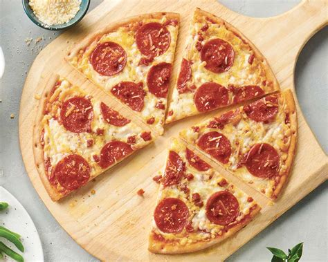

Pizza

Description
Pizza is a dish of Italian origin consisting of a usually round,flat base of leavened wheat-based dough topped with tomatoes, cheese,
and often various other ingredients(such as various types of sausage, anchovies, mushrooms, onions, olives, vegetables, meat, ham, etc.),
which is then baked at a high temperature, traditionally in a wood-fired oven.
Ingredients
- 400g flour
- Ketchup
- Sugar
- Yeast
- Cheese
- Salami or Pepperoni
- Mushrooms
- Basil
- etc
Steps
- Mix the flour,yeast,sugar, and a bit of lukewarm water in a bowl.
- Knead the dough. Let it proof in a warm place for about an hour.
- Roll the dough with a rolling pin in the shape of your baking pan.
- Spread about a tbsp. of ketcup on the rolled out dough
- Add the cheese, pepperoni,mushrooms, and any other toppiings you'd like.
- Put the pizza in a pre-heated oven at 250 °C for about an hour.
- The pizza is done when the cheese melts and the dough has a light brownish color. Cut into triangular pieces. The pizza is done.